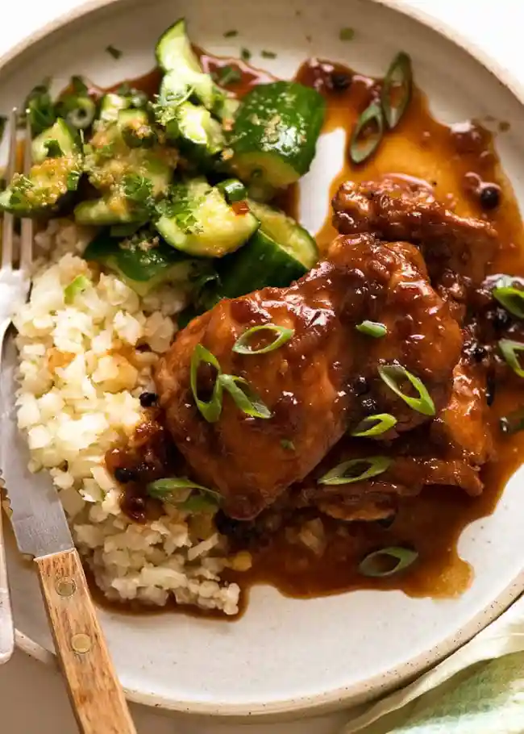

Adobo Chicken

Filipino Chicken Adobo
· · · Method · · ·
3 lbschicken thigh fillets, boneless and skinless10garlic cloves, crushed½ cupsoy sauce2 cupswater¼ cuprice vinegar4bay leaves2 tbspbrown sugar- salt, to taste
1 tbspwhole black pepper3green onions/scallions , sliced (garnish)
Salt the chicken the day before and leave in fridge in a plastic bag or container.
Combine the garlic and soy sauce and marinade the chicken for at least 30 minutes in the fridge.
Place a large pan on medium heat and add oil, once the oil is hot put the marinated chicken and brown.
Pour in the remaining marinade and add water, then bring to a boil.
Add the dried bay leaves and whole peppercorn. Simmer for 30 minutes or until the chicken is tender.
Add the vinegar, stir and simmer for 10 more minutes.
Add the sugar, salt, and stir. Then remove from heat.
Serve with rice and green onions on top.